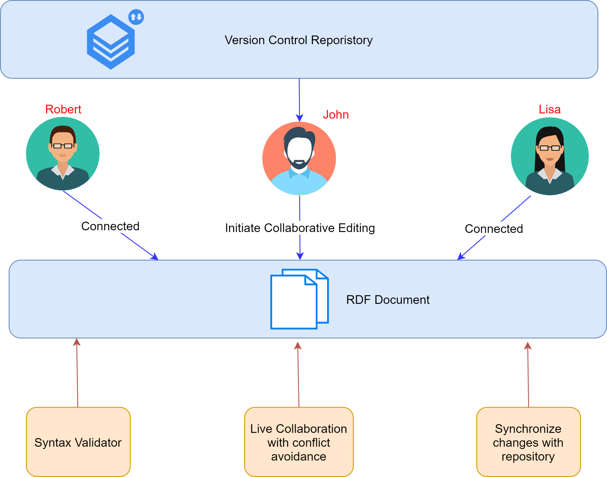
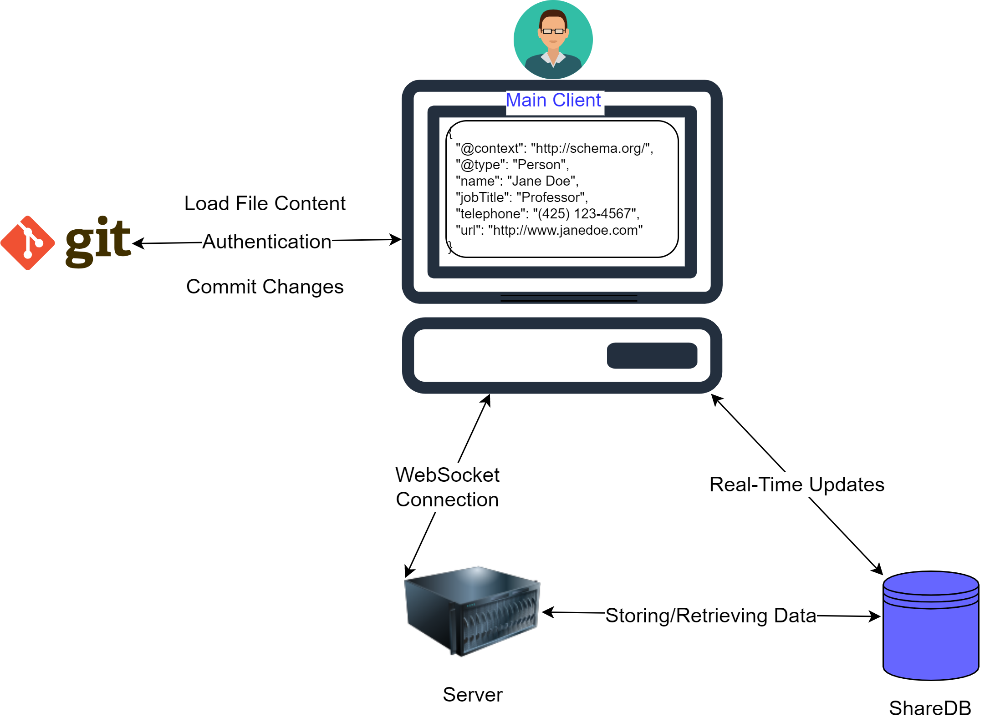

Overview • Architecture • Motivation • Features • Implementation • Installation • FAQ • License • Contact
Online Collaborative Ontology Editor (OntoEditor) on top of Distributed Version Control Systems is an approach towards supporting collaborative developing ontologies with syntax parsing in different RDF serialization formats, such as Turtle, Json-LD, and RDF/XML.
John, Robert, and Lisa, experienced ontology engineers, face challenges in collaborative ontology development. Current tools lack real-time collaboration, syntax checking, and efficient communication. To streamline this, we've devised a solution enabling real-time collaborative editing, live syntax checking, and instant communication.
Users work on a shared document, seeing each other's changes, cursor positions, and syntax errors in real-time. Discussions happen through live chat, resolving errors collaboratively. Only authorized users can commit changes to the remote repository. This approach simplifies collaboration, ensuring real-time error detection and synchronization with the remote repository.
The architecture of OntoEditor consists of several components designed to serve as a Streamlined Visual KG Builder specifically tailored for novice users. The main components are can be seen below in the coming diagram.
